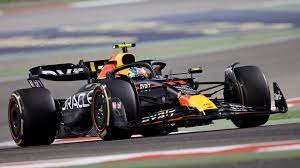
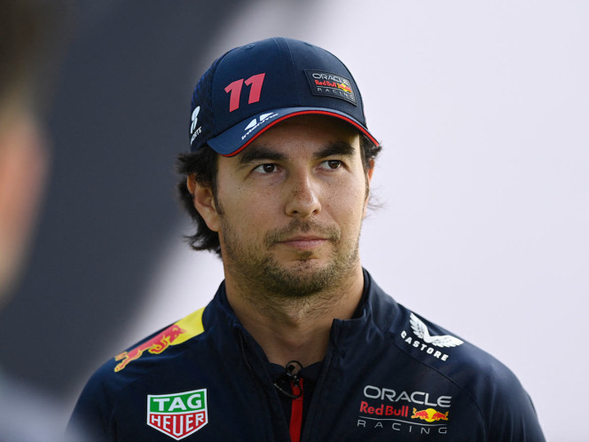

Formula 1
F1
La Fórmula 1, abreviada como F1 y también denominada la «categoría reina del automovilismo» o «la máxima categoría del automovilismo», es la competición de automovilismo internacional más popular y prestigiosa, superando a categorías de automovilismo como la NASCAR, el Campeonato Mundial de Rally, el Campeonato Mundial de Turismos o la Fórmula E, entre otras. A cada carrera se le denomina Gran Premio y el torneo que las agrupa se denomina Campeonato Mundial de Fórmula 1. La entidad que la dirige es la Federación Internacional del Automóvil (FIA). El Formula One Group es controlado por la empresa estadounidense Liberty Media desde septiembre de 2016.
checo Perez
Sergio Michel Pérez Mendoza, también conocido como Checo Pérez, es un piloto de automovilismo mexicano. Actualmente es miembro de la Escudería Telmex.1? Desde 2021 es piloto de Red Bull en Fórmula 1, resultando tercero en 2022.2? Comenzó su carrera en 2004; En 2009 debutó en la GP2 Series y al año siguiente fue subcampeón. Fue miembro de la Academia de pilotos de Ferrari hasta 2012. Hizo su debut en Fórmula 1 con el equipo Sauber durante la temporada 2011, donde obtuvo su primer podio en el Gran Premio de Malasia de 2012. Debido a su corta edad y buen desempeño, parte de la prensa lo apodó «El niño prodigio mexicano»